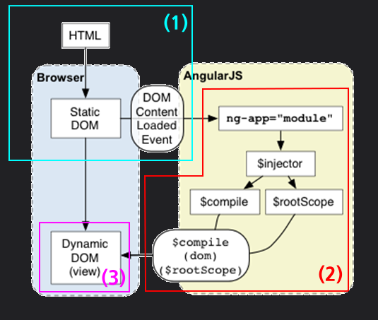
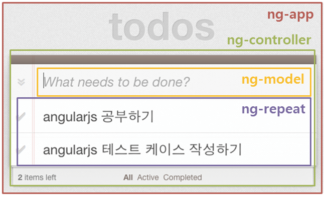
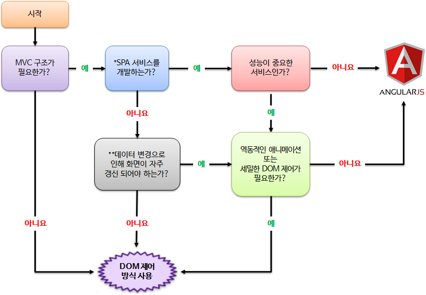

가볍게 살펴보는

Jan 16, 2015 - AU개발랩 박재성

AngularJS?
- 2009년 Miško Hevery과 Adam Abrons에 의해 개발된 MVC(또는 MVW) 프레임워크
- SPA(Single Page Application) 형태의 웹 어플리케이션 개발에 적합
- DOM 제어에 중점을 두지 않고 데이터 변화와 출력에 중점
Philosophy
1. 데이터 중심적
- 기존 방식은 먼저 대상 DOM 요소를 선택 한 후, 필요한 작업을 수행하는 형태
→ AngularJS는 데이터 자체에 초점을 맞추어 작업, 데이터의 출력은 자동으로 수행 2. 테스트 주도적
- Dependency Injection을 통해 손쉽게 mock-up 객체로 전환
- 뷰와 분리된 컨트롤러내의 비즈니스 로직은 테스트 친화적
3. 선언적 HTML
- 커스텀 태그, 태그 속성 등을 통한 선언적 형태의 사용
간단 AngularJS 예제 #1
간단 AngularJS 예제 #2
양방향 데이터 바인딩
(Two-Way Data Binding)

초기화 과정

- 1. DOMContentLoaded 이벤트에서 실행
- 2. AngularJS 영역 초기화 과정 :
- 문서 내에서 ng-app 지시자 확인
- 모듈 및 지시자와 연관된 모듈을 로딩
- 어플리케이션 injector 생성
- DOM의 컴파일
컴파일은 DOM트리를 순회하면서 지시를 찾아 매칭하고(Compile 과정), 이후 지시자와 스코프를 결합(Link 과정)해 모델의 변경을 뷰에 출력하는 일련의 처리 작업을 의미
- 3. 변경된 DOM의 화면 출력
개발방법 비교:
DOM 제어 vs AngularJS

개발방법 비교: DOM 제어

개발방법 비교: AngularJS
개발방법 비교:
DOM 제어 vs AngularJS
| 구분 | 종류 | 크기(byte) | Total(byte) |
|---|---|---|---|
| DOM 제어(Jindo) | HTML | 1,164 | 4,951 (100%) |
| JavaScript | 3,787 | ||
| AngularJS | HTML | 2,059 | 3,161 (63.84%) |
| JavaScript | 1,102 |
적용사례로 살펴본 학습 비용
| 구분 | 학습 시간/예측 | 개발 서비스 종류 |
|---|---|---|
| 사례1 | 6주 | 서비스 어드민 |
| 사례2 | 7일(2일 학습 + 5일 개발) | 2개의 탭을 갖는 목록 |
| 사례3 | JS 초급: 쉽게접근 JS 중/상급: 기존 방식의 익숙함으로 인한 시간필요 |
APM, 저작도구, 프로모션 페이지, etc. |
| 사례4 | 2주 | 컨텐츠와 목록 포함하는 엔드 페이지 |
개발자들이 생각하는 장점
- 유지보수가 쉽다, 개발속도가 빠르다.
- 간편한 데이터 바인딩을 통해 뷰 업데이트가 쉽다.
- 코드 패턴이 동일해 개인간 차이에 따른 결과물의 차이가 적다, 코드량이 감소한다.
- SPA 개발에 최적화 되어 있다.
- 기능적인 분리가 명확해 협업이 쉽다.
고려사항: 성능 #1 TodoMVC Benchmark
http://dsuket.github.io/todomvc-perf-comparison/고려사항: 성능 #2 초기 로딩&렌더링

고려사항: 성능 #3 데이터 처리
100개 목록 데이터가 HTML에 포함되어 처리되는 경우
< click to refresh >
고려사항: 성능 #4 데이터 바인딩
데이터 편차에 따른 처리 속도
One-Way Data Binding vs. Two-Way Data Binding
고려사항: FOUC*
<body ng-app="myApp">
<div ng-controller="myControllerList">
<ul>
<li ng-repeat="fruit in fruits">
<span>{{fruit.name}}</span> / <span>{{fruit.qty}}</span>
</li>
</ul>
<button onclick="location.reload()">reload</button>
</div>
<script type="text/javascript" src="https://code.angularjs.org/1.3.8/angular.min.js"></script>
<script type="text/javascript">
angular.module("myApp",[])
.controller("myControllerList", function($scope) {
$scope.fruits = [
{ name: '메론', qty: 9 },
{ name: '망고', qty: 3 },
{ name: '바나나', qty: 1 }
];
});
</script>
</body>고려사항: 이벤트 바인딩
양방향 데이터 바인딩을 위해 모델로 지정된 요소에
여래 개의 이벤트가 바인딩 된다.
고려사항: 호환성
Angular 2.0에선 1.x과 호환성 갖지 않음 (주요 문법의 변경과 폐지)
도입 할까?,말까?
muchas gracias.